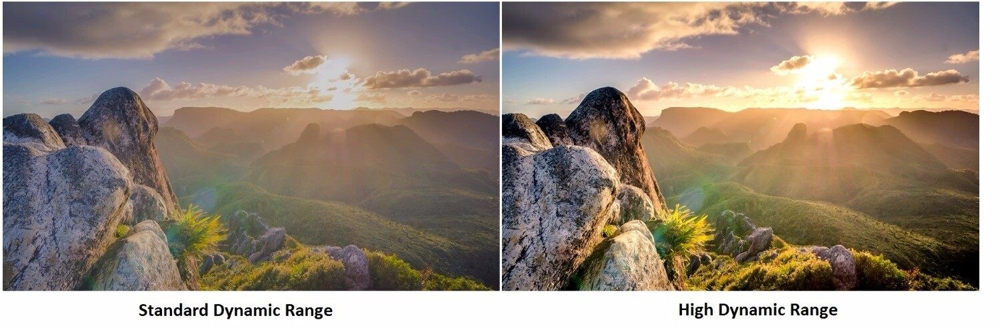

| HDR - Высокий динамический диапазон. В терминах фотографии динамический диапазон - это разница между самыми светлыми и самыми темными элементами изображения. HDR - это процесс, который увеличивает этот динамический диапазон за пределы того, что в противном случае могло бы быть захвачено объективом вашего смартфона. Он может быть использован для создания либо точных представлений о том, что вы можете видеть своими глазами, либо более вычурных снимков, которые создают ощущение высокой четкости пейзажей. |  |